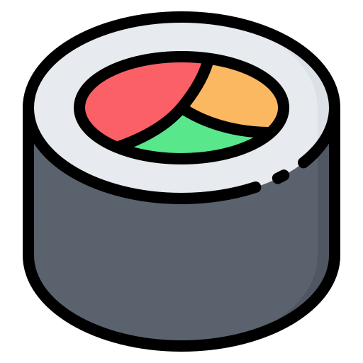
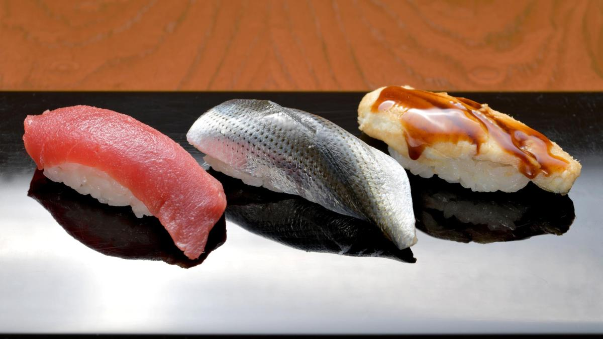

JIRO ONO
Actu
Jiro Dreams of Sushi
avec - Jiro Ono — Le plus grand chef de sushi du monde

Jiro Dreams of Sushi ( 2012 ) est un documentaire calme mais passionnant qui relate la vie de Jiro Ono, le chef de sushi le plus célèbre de Tokyo.
Jiro a perfectionné l'art de fabriquer des sushis. Il travaille du lever au-delà du coucher du soleil pour goûter chaque morceau de poisson; former méticuleusement ses employés
Réservation Restaurant
Sukiyabashi Jiro

Bien que son restaurant Sukiyabashi Jiro ne puisse accueillir que dix convives
, c'est un phénomène à Tokyo qui a remporté la prestigieuse critique 3 étoiles Michelin, faisant de lui le plus ancien chef Michelin vivant
A propos

Fan club de Jiro ono
Les sushis
